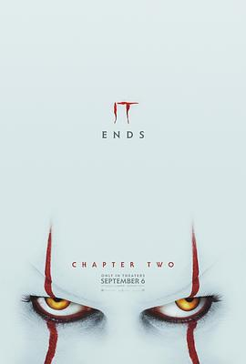

小丑回魂2 / It: Chapter Two
又名：它：第二章(台) / It 2
剧情一般，没有第一部好看
作品信息
| 导演 | 安德斯·穆斯切蒂 |
| 编剧 | 加里·多伯曼 / 斯蒂芬·金 |
| 主演 | 詹姆斯·麦卡沃伊 / 杰西卡·查斯坦 / 比尔·斯卡斯加德 / 比尔·哈德尔 / 索菲娅·莉莉丝 / 杰克·迪伦·格雷泽 / 菲恩·伍法德 / 杰登·马泰尔 / 特洛伊·詹姆斯 / 哈维尔·博泰特 / 杰·瑞恩 / 斯蒂芬·金 / 杰克逊·罗伯特·斯科特 / 杰里米·雷·泰勒 / 泽维尔·多兰 / 杰克·威利 / 尼古拉斯·汉密尔顿 / 杰丝·威克斯勒 / 詹姆斯·兰索恩 / 怀亚特·奥莱夫 / 欧文·提格 / 艾赛亚·穆斯塔法 / 安迪·比恩 / 蒂奇·格兰特 / 泰勒·弗雷 / 杰森·富克斯 / 乔森·雅各布 / 斯蒂夫·博加尔特 / 洛根·汤普森 / 杰克·辛 / 维尔·贝布林克 / 安东尼·尤埃西 |
| 类型 | 剧情 / 恐怖 / 奇幻 |
| 制片国家/地区 | 加拿大 / 美国 |
| 语言 | 英语 |
| 上映日期 | 2019-09-06(美国) |
| 片长 | 169分钟 |
| IMDb | tt7349950 |
最后一次看到是 2026-08-01T11:05:48+10:00 · 豆瓣原页